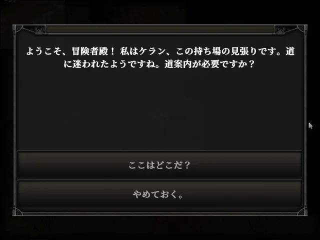
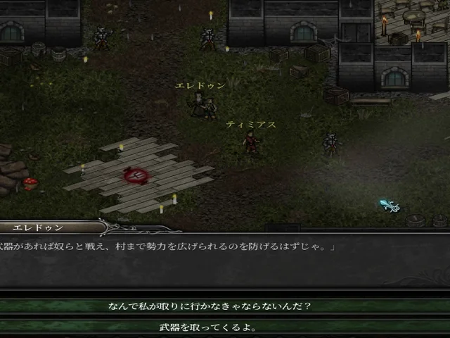
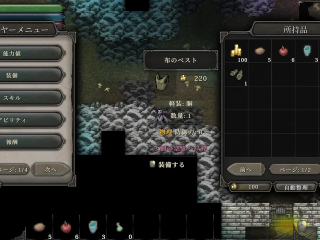

対応している版
Windows の Steam 版に対応しています。導入方法や対応しているゲームのバージョンは、各作品のページをご覧ください。
ご意見・誤訳の報告
英語のまま残った文や誤訳に気づいたら、各作品のページにある GitHub の Issues で教えてください。
Valorware の見下ろし型アクション RPG「9th Dawn」シリーズを日本語で遊べるようにする、非公式のファンメイド日本語化プロジェクトです。 Steam 版の会話・アイテム・クエスト・メニューなどを日本語で表示します。 どのパッチも、ゲームフォルダにファイルを置くだけで使え、ゲームのファイルは書き換えません。置いたファイルを消せば英語に戻ります。



Windows の Steam 版に対応しています。導入方法や対応しているゲームのバージョンは、各作品のページをご覧ください。
英語のまま残った文や誤訳に気づいたら、各作品のページにある GitHub の Issues で教えてください。